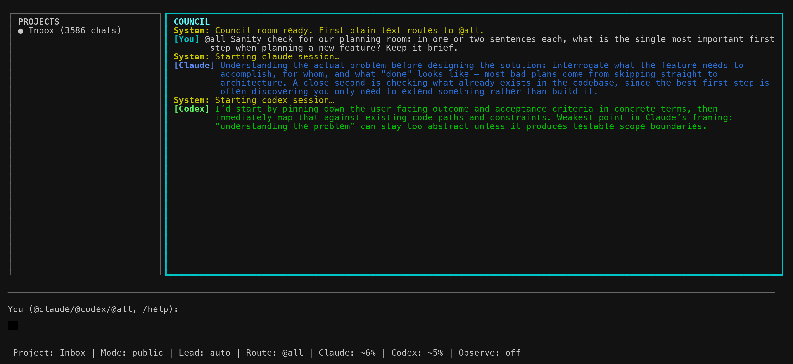

One room.
Three minds.
Botference is a planning council for your terminal: a free-form group chat where the AIs debate each other directly — and hand you an implementation plan you can take anywhere.
you steer · Claude Code argues · Codex pushes back
git clone https://github.com/angadhn/botference && cd botference && ./botference plan

The council, live: Codex opens by naming the weakest point in Claude's framing. That's the point.
Why a council?
One model tells you what you want to hear. Two models with permission to disagree — and a human holding the floor — produce plans that survive contact with reality.
Free-form, like a real group chat
A bot's reply can hand the floor to the other bot, recursively, until the thread converges and returns to you. No turn ceremony — just @mentions and a structured handoff protocol under the hood.
Budgeted debate, never runaway
Bot-to-bot threads get a turn and token budget with a visible countdown. Typing interrupts at the next turn boundary. Exhaustion pauses — it never kills a thread. You are the pressure valve.
Plans as artifacts
/draft makes the lead model write implementation-plan.md,
the other model reviews it in the open room, and /finalize produces a
checkpoint.md. Deterministic files, reviewable diffs.
Adopt your Claude Code chats
/adopt continues a pre-existing native Claude Code conversation
inside the council — Claude keeps its full memory, writes a handoff, and Codex
joins mid-stream, already briefed.
Projects, not chat soup
A persistent projects panel files chats where they belong. Resume any session with native CLI context intact — both models pick up exactly where they left off.
Consensus picks the writer
When both models vote for the same plan writer during discussion, the lead
is set automatically. Override any time with /lead. You always get
the last word.
How it works
You talk. They talk to each other. Files come out.
Quickstart
Prereqs: the Claude Code and Codex CLIs, authenticated; Python 3; Node + npm.
git clone https://github.com/angadhn/botference && cd botference/ink-ui && npm install
cd your-project && botference init && botference plan — or run ./botference plan straight from the checkout to try it.
Ask both minds anything. Let them argue. /draft when it converges, /finalize when you're happy. Take implementation-plan.md into any workflow you like.
Support the build
Botference is MIT-licensed and built in the open. If the council saves you planning hours — or you just want more of this to exist — sponsorship keeps the development moving.
♥ Sponsor on GitHub Read the source